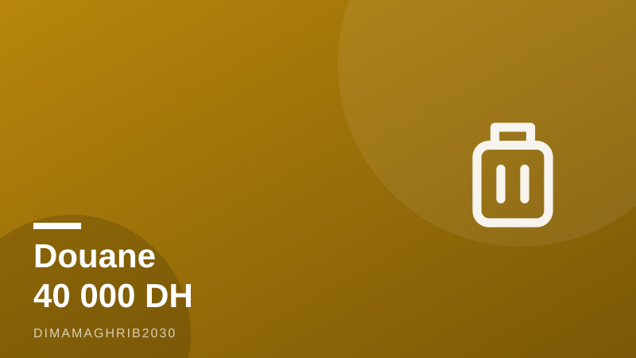

Douane marocaine : ce que tu peux (vraiment) ramener sans payer — le guide d'un ami initié pour le retour d'aoûtMoroccan Customs, Decoded: What You Can Really Bring In (and Out) During the August Rush

On est le 9 août, et si tu fais partie de la famille MRE, tu sais ce que ça veut dire : la phase retour de Marhaba 2026 bat son plein. Selon NomadLawyer, 2,74 millions de Marocains du monde sont déjà entrés au pays cette saison, dont plus de 52 % par la mer. Traduction : dans les prochains jours, tout ce beau monde repart en sens inverse, et la douane Maroc MRE devient le sujet numéro un des groupes WhatsApp familiaux. Laisse-moi te faire gagner du temps — et peut-être quelques heures de queue à Tanger Med.
La bonne nouvelle : la franchise passe à 40 000 dirhams
C'est LE changement de l'année. Pour les MRE qui rentrent s'installer définitivement au Maroc, la franchise de 40 000 dirhams sur les effets personnels remplace l'ancien plafond de 30 000, comme l'ont rapporté Le360 et Bladi.net. Concrètement, tu peux ramener ton mobilier, ton électroménager et tes affaires de vie courante sans payer de droits, tant que tu restes dans cette enveloppe et que c'est manifestement de l'usage personnel. Mon conseil d'ami : garde toutes tes factures, même froissées au fond du sac. Le douanier qui voit une facture datée et un carton ouvert d'un lave-linge déjà utilisé, il sourit. Celui qui voit trois téléphones neufs sous blister, beaucoup moins. La règle officieuse que tout le monde connaît : un téléphone et un ordinateur par personne pour usage personnel, ça passe tranquillement. Au-delà, prépare-toi à discuter.
Ta voiture : l'admission temporaire enfin assouplie
Autre vraie avancée cette année, signalée par Médias24 : l'admission temporaire véhicule (la fameuse AT) peut désormais être autorisée par procuration, sur la base d'un certificat provisoire d'immatriculation (CPI). Si tu viens d'acheter ta voiture en Europe et que la carte grise définitive n'est pas arrivée, ou si c'est ton frère qui descend avec la voiture, c'est un casse-tête en moins. Toutes ces règles mises à jour sont compilées dans le nouveau guide « Marocains du Monde 2026 » disponible sur le portail de l'ADII, comme le soulignent Yabiladi et SNRT News. Franchement, télécharge ce guide ADII MRE avant de partir : quinze minutes de lecture qui t'évitent une négociation stressante au port.
Ce qui te fait vraiment perdre des heures à Tanger Med
Parlons de la douane à Tanger Med à la mi-août, entre nous. Ce qui bloque les gens, ce n'est presque jamais la méchanceté d'un agent, c'est l'impréparation. Le cash d'abord : au-delà de 100 000 dirhams (ou l'équivalent en devises), tu dois déclarer, point. Ne joue pas avec ça, c'est le genre d'« oubli » qui transforme ton après-midi en journée. Ensuite, l'électronique non déclarée destinée à la revente — les cartons de téléphones « cadeaux pour les cousins », tout le monde connaît la chanson, eux aussi. Déclare spontanément ce qui sort de l'ordinaire, tu passeras plus vite que celui qui espère passer entre les gouttes. Enfin, le timing : pour le retour Marhaba 2026, arrive au port au moins trois heures avant ton embarquement, voyage tôt le matin si tu peux, et prends de l'eau et des snacks pour les enfants. Ce ne sont pas des règles officielles, juste les réflexes de quelqu'un qui a fait la traversée plus de fois qu'il ne veut l'admettre. Bon retour, et l'année prochaine incha'Allah on refait la route ensemble.
It's August 9, and if you're part of the diaspora family, you know exactly what that means: the return leg of Operation Marhaba 2026 is peaking. According to NomadLawyer, 2.74 million Moroccans living abroad have already entered the country this season, more than 52 percent of them by sea. Which means right now, all of us are turning around and heading back through the same ports — and "what can I bring into Morocco" (and out of it) suddenly becomes the hottest topic in every family WhatsApp group. Let me save you some time, and possibly some hours in line at Tanger Med.
The big win: the duty-free allowance jumps to 40,000 dirhams
This is the headline change in Morocco customs rules 2026. For MRE moving back to settle in Morocco, the duty-free franchise on personal effects was raised from 30,000 to 40,000 dirhams, as reported by Le360 and Bladi.net. In plain terms: your furniture, appliances and everyday belongings come in duty-free, as long as you stay within that envelope and it's obviously for personal use. My friendly advice — keep every receipt, even the crumpled ones. A customs officer who sees a dated invoice and a washing machine that's clearly been used will wave you through with a smile. One who sees three shrink-wrapped iPhones will not. The unwritten rule everyone in the diaspora knows: one phone and one laptop per person for personal use passes without drama. Beyond that, be ready for a conversation.
Your car: temporary admission just got easier
The other genuine improvement this year, flagged by Médias24: temporary admission of vehicles (the famous AT) can now be authorized via power of attorney, on the basis of a provisional registration certificate (CPI). If you just bought a car in Europe and the final registration papers haven't arrived, or your brother is driving the family car down, that's one major headache gone. All the updated rules are compiled in the new "Marocains du Monde 2026" guide on the ADII customs portal, as Yabiladi and SNRT News have pointed out. Honestly, download that guide before you travel — fifteen minutes of reading spares you a stressful negotiation at the port.
What actually gets you stopped at Tanger Med
Let's be real about Tanger Med in mid-August. What holds people up is almost never a grumpy officer — it's lack of preparation. Cash first: above 100,000 dirhams (or the equivalent in foreign currency), you must declare it, full stop. Don't gamble on that one; it's the kind of "oversight" that turns your afternoon into a full day. Second, undeclared electronics that look destined for resale — those boxes of phones that are "gifts for the cousins." Everyone knows that song, including customs. Declare anything unusual up front; you'll clear faster than the person hoping to slip through. And timing: for the Marhaba 2026 return peak, arrive at the port at least three hours before boarding, travel early in the morning if you can, and pack water and snacks for the kids. None of this is official law — just the reflexes of someone who has done this crossing more times than he'd like to admit. Safe travels home, and see you on the road again next summer, incha'Allah.